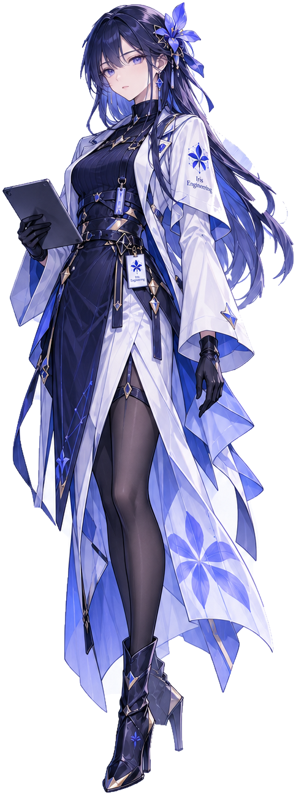
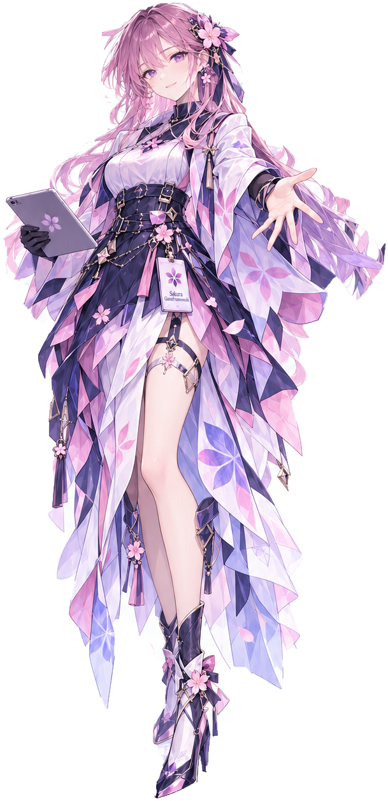
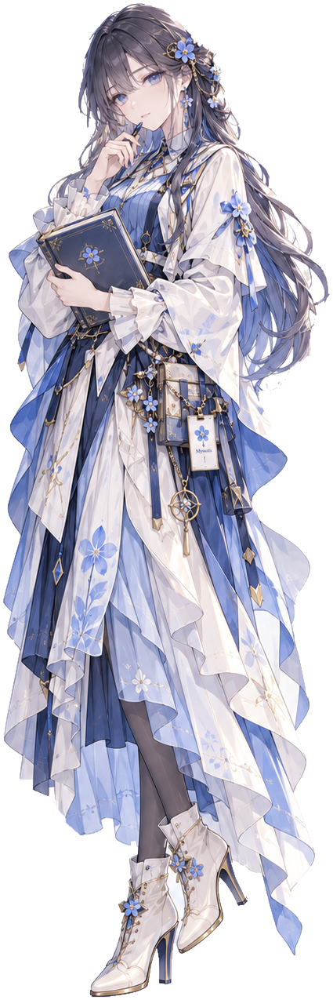
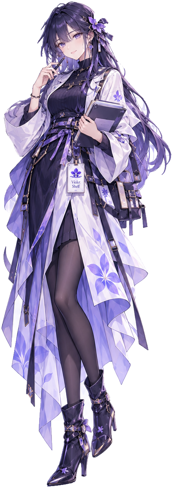

Iris Engineering
让工程推进有据可依把分散的项目事实、决策、任务与交付结果组织起来，让工作更容易接续、追踪与恢复。
了解 Iris EngineeringIRISSAKURA · FLOWERS AND CHARACTERS
我用花卉为长期维护的项目命名，也为它们设计了各自的角色。工程、框架、知识与工具，构成了我的开发与创作实践。

把想法做成作品，让经验沉淀为下一次创作的起点。
FOUR PROJECTS
把分散的项目事实、决策、任务与交付结果组织起来，让工作更容易接续、追踪与恢复。
了解 Iris Engineering把可复用的运行时服务、玩法能力和工具组织成可组合的游戏开发框架，并在明确边界内处理引擎差异。
了解 SakuraGameFramework整理值得保留的问题、研究和创作参考，让积累能够被找到、理解，并用于下一次创作。
了解 Myosotis把卡牌、素材、配表、概率实验与创作检查放进清晰的本地工具入口，让想法更容易整理、试验与导出。
了解 Violet ShelfCHARACTERS

以鸢尾的蓝紫与利落线条，表达工程的清晰与秩序。

以樱花的色彩与轻盈姿态，表达游戏能力的组合与生长。

以勿忘我的湖蓝与书卷元素，表达记录、连接与重新发现。

以堇花的暖紫与工具元素，表达触手可及的创作陪伴。
VISUAL LANGUAGE
鸢尾的蓝紫、樱花的粉、勿忘我的湖蓝与堇花的暖紫，让每个项目保有自己的辨识。
IRIS × SAKURA 连接工程与游戏框架，让组织工作与实现想法相互配合。